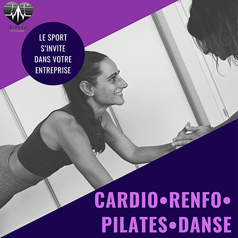

💼 Bien-être au travail : des pauses déjeuner sportives offertes à Cholet et Sévremoine !
Publié le 01 octobre 2025
Par Jelyn Fit Coaching

Et si vos pauses déjeuner devenaient un vrai moment de bien-être ?
À partir du 1er octobre 2025, j’ai le plaisir de lancer mon activité de coach sportif et, pour marquer le début de cette belle aventure, je propose aux entreprises de Cholet, Sévremoine et leurs alentours des cours collectifs gratuits entre midi et deux.
L’objectif ? Faire découvrir les bienfaits d’une pause active, accessible à tous, pour se détendre, se ressourcer et repartir du bon pied pour l’après-midi.
🌿 Pourquoi cette initiative ?
Le monde du travail évolue, et avec lui, nos besoins.
Le stress, la sédentarité ou encore le manque de temps pour soi peuvent peser sur le moral et la santé.
Mon envie à travers cette initiative : remettre du mouvement et de la convivialité au cœur de la journée de travail.
Ces séances sont pensées pour être :
- Accessibles à tous, quels que soient l’âge ou le niveau de forme
- Progressives et bienveillantes, sans pression de performance
- Adaptées aux espaces et aux besoins de chaque entreprise
🧘♀️ Au programme
Chaque séance est unique, mais toujours axée sur le bien-être et la bonne humeur :
✨ Cardio pour relâcher la pression et booster l’énergie
✨ Renforcement musculaire pour tonifier et prévenir les douleurs liées à la posture
✨ Pilates pour améliorer respiration et alignement
✨ Danse pour libérer le corps et favoriser la cohésion d’équipe
🤝 Un accompagnement humain et motivant
Passionnée par le mouvement depuis toujours, j’ai d’abord évolué dans le monde de la danse, avant d’élargir ma pratique au fitness et au pilates.
Ces expériences m’ont appris une chose essentielle : bouger transforme autant le corps que l’esprit.
Mon approche repose sur trois piliers : bienveillance, énergie et adaptation.
Chaque séance est un moment pour respirer, se recentrer et repartir plus léger, physiquement comme mentalement.
🎁 Offre découverte
💡 Du 1er octobre 2025 au 1er février 2026, les entreprises de Cholet, Sévremoine et alentours peuvent bénéficier gratuitement de ces séances découvertes.
C’est l’occasion idéale de tester une nouvelle manière de vivre ses pauses déjeuner :
→ moins de tension, plus d’énergie, et un vrai temps pour soi… au travail !
📩 Vous souhaitez participer ?
Je recherche actuellement des entreprises locales prêtes à offrir à leurs collaborateurs cette parenthèse bien-être.
Si vous êtes intéressé(e), contactez-moi directement pour échanger sur les possibilités d’organisation.
Et si vous connaissez un dirigeant, un service RH ou un collègue qui pourrait être intéressé, n’hésitez pas à partager cette initiative 🙏
Ensemble, construisons un réseau local où le sport et la santé s’invitent naturellement au travail 💪🌿